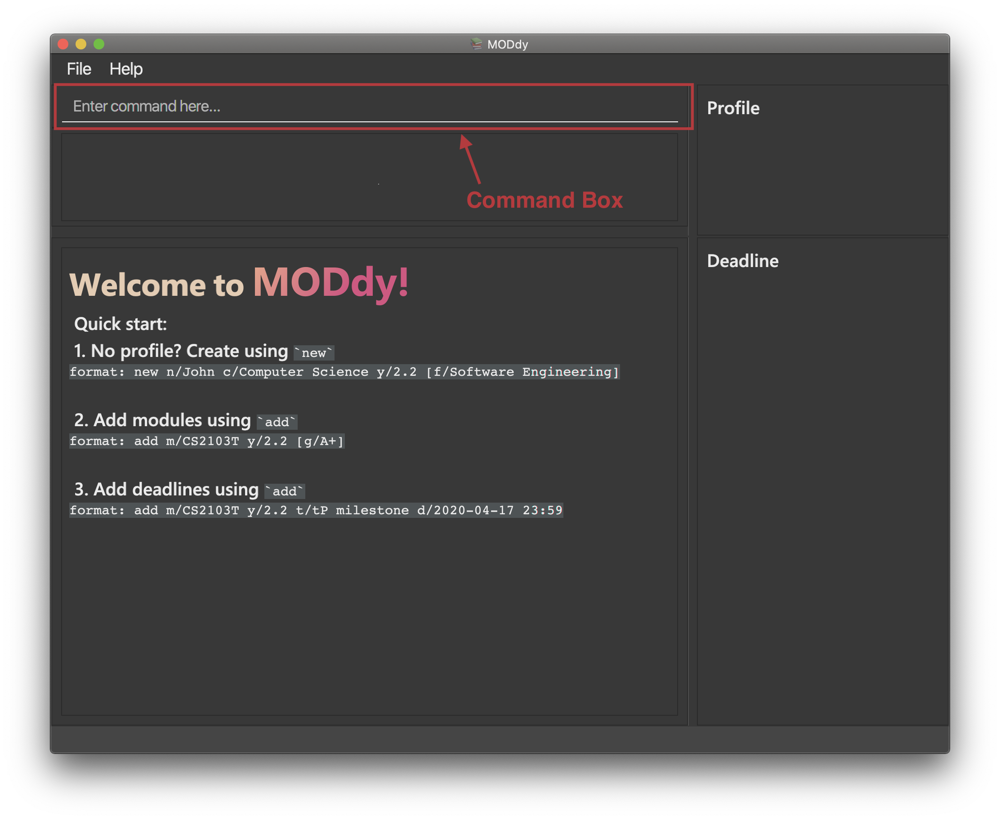

By: AY1920S2-CS2103T-W13-3 Since: Jan 2020 Licence: MIT
- 1. Introduction
- 2. About the User Guide
- 3. Quick Start
- 4. Features
- 4.1. Viewing help :
help - 4.2. Creating new user profile :
new - 4.3. Adding module or task:
add - 4.4. Editing profile, module or task:
edit - 4.5. Showing profile, module, semester, course or focus area:
show - 4.6. Deleting profile, module, task or grade:
delete - 4.7. Calculating Cumulative Average Point (CAP)
- 4.8. Returning to Homepage :
home - 4.9. Resetting MODdy:
clear - 4.10. Exiting MODdy:
exit - 4.11. Saving your data
- 4.1. Viewing help :
- 5. FAQ
- 6. Command Summary
- 7. Appendix
1. Introduction
Welcome to MODdy!
MODdy is a one-stop application for all your academic needs!
It keeps you organized and well-planned throughout your course of study. It is optimized for those who prefer to work with a Command Line Interface (CLI) while still having the benefits of a Graphical User Interface (GUI). This user guide aims to give you a clearer understanding on how to use MODdy as well as a summary of its features.
Currently, MODdy targets student from School of Computing (SoC) in the National University of Singapore (NUS). If you are from SoC and is looking for an application to manage all your modules and tasks throughout your degree progression, what are you waiting for? Jump to Quick Start to get started. Hope you enjoy the company of MODdy on your SoC journey!
2. About the User Guide
This user guide aims to provide you with essential information on how to use MODdy.
With the following features of MODdy listed below, we hope to provide you a seamless academic management experience in NUS.
-
Viewing help
-
Creating new user profile
-
Adding module or task
-
Editing profile, module or task
-
Showing profile, module, semester, course or focus area
-
Deleting profile, module, task or grade
-
Calculating Cumulative Average Point (CAP)
-
Returning to homepage
-
Resetting MODdy
-
Exiting MODdy
You can refer to Section 4, “Features” for details of each feature mentioned above.
Please note the following which may serve as points of interests:
Enter : This grey highlight with white outline indicates a keyboard’s key.
word : This grey highlight indicates commands that you can type into MODdy’s command box.
| This symbol indicates information that you may wish to note. |
| This symbol indicates tips provided by us. |
3. Quick Start
This section provides you with steps on how you can install MODdy on your computer and how to get started with MODdy.
-
Ensure you have Java 11 or above installed in your Computer.
-
Download the latest MODdy.jar here.
-
Copy the file to the folder you want to use as the home folder for your personalised MODdy.
-
Double-click the file to start the app. The GUI, as shown in Figure 2 below, should appear in a few seconds.
Figure 2. Homepage of MODdy -
Type the command in the command box as shown in Figure 2 and press Enter to execute it.
e.g. typinghelpand pressing Enter will open the help window. -
Create your own profile by entering your details in the command box using these parameters:
new n/name c/course y/year.semester. -
Some other example commands you can try:
-
add m/CS1231 y/1.1: Adds CS1231 into your list of modules under Year 1 Semester 1. -
delete n/name: Deletes your entire profile and its data. -
exit: Closes the GUI and exits MODdy.
-
-
Refer to Section 4, “Features” for details of each command.
4. Features
The following 11 sections provides you a deeper understanding on how to use the features you can perform in MODdy and how the features work.
Command Format
-
Alphabets preceding the
/sign are the prefix tags you need to provide. -
Words succeeding the
/sign are the parameters supplied by you, e.g. inadd m/moduleCode,moduleCodeis a parameter given by you. -
Parameters can be entered in any format and are case-insensitive, unless stated otherwise.
-
Items in square brackets are optional e.g
m/moduleCode [g/grade]can be used asm/CS2103 g/A+or asm/CS2103.
4.1. Viewing help : help
If you are unsure about the commands and want to seek help, this command opens up a pop-up help window where there are examples for basic command formats.
For more detailed help, you can visit the link provided in the window, as shown in Figure 3 below. The link directs you to this User Guide where you can get more information on how to use each feature in MODdy.
Format: help

4.2. Creating new user profile : new
If you want to get started on using MODdy, you will have to create a new profile. By using this command, it creates a profile for you as shown in the figure below. You will have to provide your details as parameters.
Format: new n/name c/course y/year.semester [f/focusArea]
Example: new n/John c/Computer Science y/2.2 creates a new profile with the name "John", currently majoring in "Computer Science" and is a Year 2 Semester 2 student, as shown in Figure 4 below.

new n/John c/Computer Science y/2.2 f/Software EngineeringIf you know your focus area, using this command will add focus area "Software Engineering" to your new profile alongside other details. |
| The maximum Year and Semester you can go up to is Year 8 Semester 2. |
4.3. Adding module or task: add
If you want to add modules to each of your semesters or add tasks to each of your modules in the current semester, this command is the right one for you!
There are two ways you can use the add command:
4.3.1. Adding a module to MODdy
Format: add m/moduleCode y/year.semester [g/grade]
|
You can add multiple modules at the same time but only to the same year and semester. To add multiple modules, just append the m/moduleCode tags right after another, e.g. add m/CS1231 m/IS1103 m/MA1521 y/1.1.
|
| However, you cannot add grades when adding multiple modules. |
Example: add m/CS2103T y/2.2 adds CS2103T to Year 2 Semester 2, as shown in Figure 5 below.

add m/CS2105 y/2.1 g/A+You can add CS2105 with its resulting grade, A+, concurrently to the list of modules under Year 2 Semester 1. |
| You can add up to a maximum of 10 modules per semester in MODdy. |

4.3.2. Adding a task with a deadline to a module in MODdy
Format: add m/moduleCode t/task [d/deadline]
You can add multiple tasks at once but only to the same module, e.g. add m/CS1231 t/tutorial d/2020-04-20 18:00 t/assignment d/2020-04-25 23:59. |
However, for multiple tasks, as long as one task has a deadline, all t/task tags have to be appended with d/deadline tags.For the tasks with no deadlines, the tag can just be d/, e.g. add m/IS1103 t/project d/2020-05-01 23:59 t/reflection d/.
|
Example: add m/CS2105 t/Assignment d/2020-04-20 23:59 adds a task named "Assignment"
with the deadline "20 April 2020 23:59" to the already-existing module CS2105, as shown in Figure 7 below.

|
Dates are highlighted and sorted according to the number of days remaining as shown in Figure 7 above. Red: 0 - 5 days Orange: 6 - 10 days Green: ≥ 11 days |
4.4. Editing profile, module or task: edit
If you want to edit any of the attributes you have previously added to MODdy, you can do so by using the edit command to edit your profile, module details or deadline tasks.
You don’t have to worry about adding any wrong information as you can edit them at any time!
There are three ways you can use the edit command:
4.4.1. Editing your profile
Format: edit [n/name] [c/course] [y/year.semester] [f/focusArea]
Example: edit n/Brad c/Information Systems edits your profile name to "Brad" and your course to "Information Systems",
as shown in Figure 8 below.

edit n/Brad c/Information Systems f/Electronic CommerceAlongside your name and course, you can edit your focus area to match your current course using this command. |
4.4.2. Editing a module’s details in MODdy
Format: edit m/moduleCode [y/year.semester] [g/grade]
Example: edit m/CS2103T g/A+ edits your grade of the module CS2103T to A+, as shown in Figure 9 below.

edit m/CS2103T y/2.1 g/A+You can edit the grade of module CS2103T to A+ and change the semester which the module is taken in to Year 2 Semester 1 concurrently. |
| If you edit a module in your current semester to another semester, all tasks associated to this module will be removed from the deadline panel. To bring it back, edit the module’s semester back to your current semester. |
4.4.3. Editing a task’s description or deadline
Format: edit m/moduleCode t/task [nt/newTask] [d/deadline]
Example: edit m/CS2103T t/tP Submission nt/UG and DG Submission edits an existing CS2103T task "tP Submission" to new task name "UG and DG Submission", as shown in Figure 10 below.

edit m/CS2105 t/Assignment d/2020-12-12 12:00You can use this command to edit the deadline of Assignment, under module CS2105, to 12 December 2020 12:00. |
4.5. Showing profile, module, semester, course or focus area: show
Not all information can be seen at once. To see this information you have added previously, use the show command to switch your current MODdy display.
There are five ways you can use the show command:
4.5.1. Showing your profile
Format: show n/name
Example: show n/Brad shows the profile overview of user "Brad", as shown in Figure 11 below.

| All the modules under every semester, their grades, as well as your current CAP will be displayed. |
4.5.2. Showing details of a module
Format: show m/moduleCode
Example: show m/CS2103T show all the module details of CS2103T, as shown in Figure 12 below.

| The module name, prerequisites, modular credits, description and semesters the module is offered in will be displayed. |
If you request for MODdy to show multiple information at one time, such as course information on Computer Science and module information on CS1101S, using the command show c/Computer Science m/CS1101S, no objects will be displayed.MODdy will remind you that you can only display one object at a time. |
4.5.3. Showing modules in the specified semester
Format: show y/year.semester
Example: show y/1.1 shows all modules taken in Year 1 Semester 1, as shown in Figure 13 below. If grades for these modules
are available, it will be displayed as well.

4.5.4. Showing the course’s requirements
Format: show c/course
Example: show c/Computer Science shows the course requirements and focus areas of "Computer Science", as shown in Figure 14 below.

| You need to enter the course name in full! |
4.5.5. Showing modules under the specified focus area
Format: show f/focusArea
Example: show f/Software Engineering shows the Primaries and Electives of focus area "Software Engineering",
as shown in Figure 15 below.

You can retrieve the list of focus areas under a course using the show c/course command. This list can also be found in the Appendix of this guide.
|
4.6. Deleting profile, module, task or grade: delete
To remove a profile, module, task or grade from MODdy, use the delete command.
There are four ways you can use the delete command:
4.6.1. Deleting your profile
If you wish to remove your profile, you can do so with the command below. The effect of using this command is also shown in the figure below.
Format: delete n/name
Example: delete n/Brad deletes "Brad" from the profile panel as well as all other data, as shown in Figure 16 below.

| Your profile, including all modules, grades and deadlines under your name, will be deleted from MODdy |
4.6.2. Deleting a module
If you have decided not to take a module you were planning to take, or to drop a module which you are currently taking, you can delete it with the command below. The effect of using this command is shown in the figure below.
Format: delete m/moduleCode
You can also delete multiple modules at the same time. To delete multiple modules, just append the m/moduleCode tags one after another, e.g. delete m/CS1231 m/IS1103 m/MA1521.
Example: delete m/CS2103T deletes CS2103T from Year 2 Semester 2 and also removes all tasks related to CS2103T from the deadline panel, as
shown in Figure 17 below.

| The specified module, including all tasks and deadlines of that module, will be deleted from MODdy. |
4.6.3. Deleting a task
Once you have completed a task, you can delete it using the command below. The effect of using this command is shown in the figure below.
Format: delete m/moduleCode t/task
You can delete multiple tasks at the same time but only from the same module. To delete multiple tasks, just append the t/task tags one after another, e.g. delete m/CS1231 t/quiz t/exam.
|
Example: delete m/CS2103T t/Quiz deletes the task "Quiz" of module CS2103T from the Deadline Panel, as shown in Figure 18 below.

| The specified task and its deadline will be deleted from the specified module. |
4.6.4. Deleting a grade
If you have been using MODdy to simulate your grades or you have entered a grade for the wrong module, you can delete the grade using the command below. The effect of using this command is shown in the figure below.
Format: delete m/moduleCode g/
Example: delete m/CS2103T g/ deletes the grade of module CS2103T, as shown in Figure 19 below.

Any input after the g/ tag will be ignored.
|
4.7. Calculating Cumulative Average Point (CAP)
Tired of calculating your CAP on your own? Fret not! MODdy has an in-built CAP calculator feature which automatically updates your CAP when you input your module grades.
Example: If you are currently in Year 2 Semester 2, and all the modules taken in previous semesters are added with their grades, your current CAP will be calculated for you. This example is highlighted in Figure 20 below.
| If you want to simulate your future CAP, you can add grades into modules in your future semesters. |
4.8. Returning to Homepage : home
If you want to return to MODdy's Homepage, use this command, as shown in the Figure 21 below.
Format: home

4.9. Resetting MODdy: clear
Want a new profile? If you want to clear your profile and data from MODdy, use this command. It clears all entries from MODdy, as shown in the figure below.
Format: clear

4.10. Exiting MODdy: exit
Done with managing your modules and tasks for the day? If you want to close the GUI and exit MODdy, use this command.
Format: exit
4.11. Saving your data
If your MODdy application closes unexpectedly or if your computer suddenly shuts down by itself, do not worry!
Your MODdy's data is saved in the hard disk automatically after any command that changes the data. There is no need for you to save manually and worry that you will lose any unsaved data.
5. FAQ
This section provides you with some commonly asked questions you might have when using MODdy.
Here are our answers to those questions!
Q1: How do I transfer my data to another Computer?
A1: Install the app in the other computer and overwrite the empty data file it creates with the file that contains the data of your previous MODdy folder.
Q2: Can I have two profiles?
A2: Download and install MODdy in two different folders on your computer so that you will have two different data files in separate locations. You can have as many profiles as you want using this method!
Q3: How do I prevent others from seeing my grades when using my computer?
A3: We are currently working on an improved version of MODdy where there will be log in features to encrypt your data. Do keep a look out for future updates!
6. Command Summary
This section provides you with a summary of the basic commands you can perform in MODdy.
-
Help :
-
help
-
-
New :
-
new n/name c/course y/year.semester [f/focusArea]
e.g.new n/John c/Computer Science y/2.2
-
-
Add :
-
add m/moduleCode y/year.semester [g/grade]
e.g.add m/CS2105 y/2.1 g/A+ -
add m/moduleCode t/task [d/deadline]
e.g.add m/CS2105 t/Assignment d/2020-03-31 23:59
-
-
Edit :
-
edit [n/name] [c/course] [y/year.semester] [f/focusArea]
e.g.edit n/Brad c/Computer Science s/Software Engineering -
edit m/moduleCode [y/year.semester] [g/grade]
e.g.edit m/CS2103 g/A+ -
edit m/moduleCode t/task [nt/newTask] [d/deadline]
e.g.edit m/CS2105 t/Assignment nt/Project
-
-
Show :
-
show [y/year.semester] [c/course] [f/focusArea] [m/moduleCode]
e.g.show y/4,show c/information systems,show f/electronic commerce,show m/CS3230
-
-
Delete :
-
delete n/name
e.g.delete n/Brad -
delete m/moduleCode [t/task] [g/]
e.g.delete m/CS2107,delete m/CS2103 t/Project Submission,delete m/CS2105 g/
-
-
Home :
-
home
-
-
Clear :
-
clear
-
-
Exit :
-
exit
-
7. Appendix
-
List of courses and focus areas (if applicable) under each course currently supported by MODdy
-
Business Analytics
-
Financial Analytics
-
Marketing Analytics
-
-
Computer Engineering
-
Communications and Networking
-
Embedded Computing
-
Intelligent Systems
-
Interactive Digital Media
-
Large-Scale Computing
-
System-On-A-Chip Design
-
-
Computer Science
-
Algorithms and Theory
-
Artificial Intelligence
-
Computer Graphics and Games
-
Computer Security
-
Database Systems
-
Multimedia Information Retrieval
-
Networking and Distributed Systems
-
Parallel Computing
-
Programming Languages
-
Software Engineering
-
-
Information Security
-
Information Systems
-
Digital Innovation
-
Electronic Commerce
-
Financial Technology
-
-